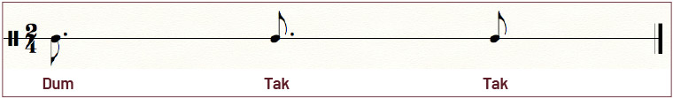
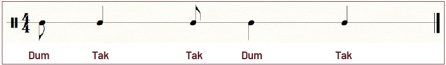
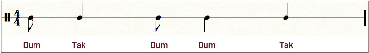
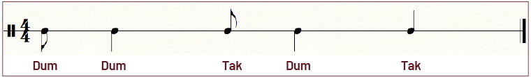
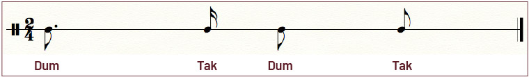
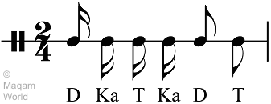
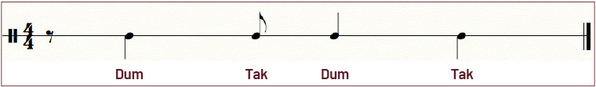
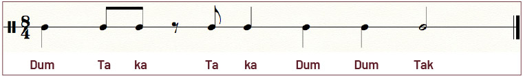

MALFUF
Procedente de Egipto y Líbano, es un ritmo tribal rápido y enérgico que está presente en las danzas y el folklore de los beduinos, muy a menudo interpretado como una introducción para composiciones orquestales clásicas. Al igual que el ritmo Ayub, también es utilizado en oberturas, secciones medias y finales de las piezas de danza oriental, pues es especialmente creado para la entrada y salida de las bailarinas. Es bastante utilizado en el raqs el-charq, y suele recibir también el nombre de ritmo de presentación. También es muy usado en el dabke. La palabra malfuf en árabe significa ‘envuelto’, ‘envolver’ o ‘dando vueltas’. El malfuf o laff es muy importante dentro de la danza árabe porque se puede utilizar como ritmo propio y también dentro de otros ritmos. Se trata de un ritmo muy marcado que puede llegar a ser muy pesado cuando se usa en exceso. Se puede escuchar en tres partes de la pieza: en la entrada, en el medio y en el final.
Maksum
Ritmo árabe y otomano por excelencia. En Egipto, Siria y en la zona del golfo Pérsico frecuentemente se usa para bailar el raqs baladi, que significa literalmente danza local o danza folclórica. Lo podemos encontrar, además, con diversos nombres: maksaum (quebrado), düyek (en Turquía, significa procedimiento), o maksaum sarie (maksaum rápido). Se conoce igualmente como wahda wa noss o whada we noss (uno y medio), y se encuentra en muchos tipos de música: popular (balady), folclore (shaabi), clásica, e incluso en el pop (geel). Puede ser interpretado en una amplia variedad de tiempos, de forma lenta o acelerada. Algunos músicos, como Hossam Ramzy, lo destacan como la base de todos los ritmos árabes, lo cual es indicativo de su trascendencia.
Saidi
Su nombre proviene de El Said, una región del alto Egipto, y que significa campesino. Se usa, entre otras modalidades, para la danza del bastón, muy practicada por las mujeres egipcias. Tradicionalmente es utilizado para la danza tahtib (la danza tradicional con bastón de los hombres, propia de la región de Aswan en Egipto), así como para el racks el assaya (danza folclórica en la que las mujeres bailan con bastón imitando a la danza masculina). Es un ritmo de la familia maksaum, similar al baladi, y se caracteriza por ser rápido, con carácter y fuerza, y que incluye dos dum en el medio.
Baladi
Baladi significa ‘mi tierra’ o ‘mi país’. La palabra baladii, de la que procede, significa ‘del campo’ o ‘pasado de moda’ y en Egipto hace referencia a lo rural. Es un 4/4 muy común por sus variaciones rápidas tocadas por múltiples instrumentos. Es muy típico en la danza árabe moderna, siendo una versión del maqsoum, con dos dums al principio. Existen muchas variaciones del baladi y algunas, incluso, poseen su propio nombre, como por ejemplo el masmoudi al-saghir (‘masmoudi el pequeño’) o masmoudi saghayir. Hay un estilo de danza folklórica de Egipto llamada de la misma forma (baladi), pero no necesariamente tiene que llevar este ritmo. El baladi normalmente se toca más lento que un maqsoum de 4/4.
Ayub
Tiene su origen en áreas del Oriente Medio, desde Turquía hasta Egipto. Se utiliza para una danza de trance egipcia conocida como zaar, nombre que también recibe el propio ritmo. La danza egipcia zaar se realiza para espantar a los malos espíritus, siendo un tipo de ritual, y en ellas se suelen realizar ofrendas de cabras, novillos o camellos jóvenes. En Marruecos estas formas de danza normalmente se bailan a un ritmo de seis tiempos.
Es muy común interpretar el ayyub a un ritmo mucho más rápido para las danzas folklóricas. Algunos dicen que el ayyub suena como un camello caminando y resulta tener cierto espíritu místico, y se suele bailar con mucho movimiento del pelo; por este motivo su danza se conoce como ‘la danza del cabello’.
• El ritmo es:
Variación: el silencio visto anteriormente en el ritmo se vuelve sonoro convirtiéndose en el primer Tak.
Fallahi
Elaboración propia. Literalmente significa 'cualquier cosa hecha por los fallahin'. Esta palabra hace referencia a la gente que vive en el campo, especialmente a los granjeros egipcios. En sus canciones de celebración, de las cuales el fallahi cobra su nombre y sentido, usan este ritmo, que es rápido y repetitivo.
Tabl
Es un ritmo muy básico, tocado con el bombo o tabl, usado en distintos países árabes, y que comienza con un silencio. También es llamado nawarí por estar relacionado con la cultura gitana. El tabl o nawari se ejecuta percutiendo con dos cañas, una con la punta doblada que golpea en el parche y otra que golpea al costado. Posee un sonido muy grave que confiere un carácter muy profundo al ritmo.
Chiftetelli
Ritmo de origen turco que hace referencia también a un estilo de baile típico de Grecia y Turquía. Hay quien lo llama también whada kebira (‘uno grande’), aunque generalmente en este no se toca el dum en el sexto tiempo. Comparado con el baladi, el chiftetelli se ejecuta lentamente. Además de usarse en el raqs sharky se usa en Turquía como danza “de casa” o tradicional. Los egipcios tienden a tocar una versión más simple del chiftetelli, que se puede encontrar también en Turquía, y que llaman waahida taaqasiim o waahida kabiir. Se utiliza normalmente en las partes más lentas de la pieza musical, en el llamado taxim, y las bailarinas lo interpretan con movimientos ondulantes, como los llamados camellos, tratándose de desplazamientos, giros y movimientos lentos. Utiliza patrones rítmicos que van desde lentos y sensuales a rápidos. Se focaliza en ondulaciones y movimientos pélvicos hacia arriba.
